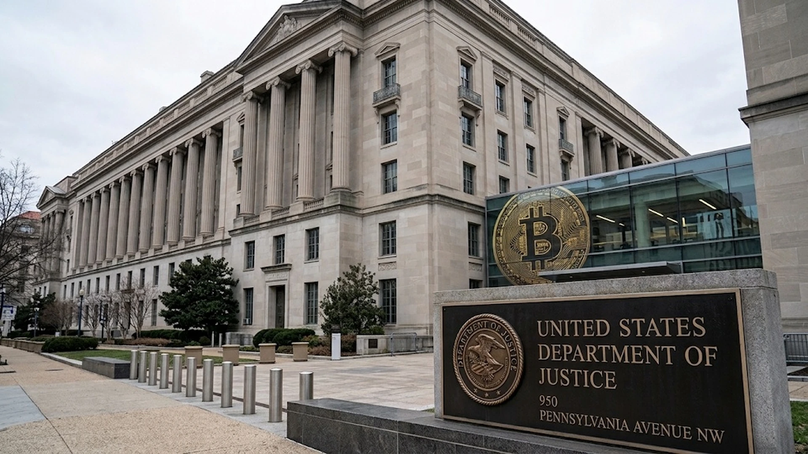

DOJ Moves to Seize More Than $1.2 Billion From Binance Hack
U.S. authorities have obtained court authorization to seize or restrain more than $1.2 billion in stolen cryptocurrency, marking a major recovery step while investigations into North Korean-linked theft and laundering continue.

The U.S. Department of Justice has obtained court authorization to seize or restrain more than $1.2 billion in cryptocurrency stolen from Binance in an October cyberattack attributed by the FBI to North Korean actors. The action marks a major recovery step in a theft that authorities say exceeded $6 billion, but it does not mean the full amount has been returned to victims or that the forfeiture process is complete.
In a November 12 announcement, the Justice Department said U.S. agencies and private-sector partners had frozen more than $2.7 billion of assets connected to the incident. More than $1.2 billion of that total is covered by court-authorized seizure or restraint. The government said efforts to trace, freeze and forfeit the remaining assets are continuing as the attackers move funds through cryptocurrency bridges, mixers and exchanges.
The FBI has identified the group behind the October 29 theft as TraderTraitor, a North Korean military-linked operation. The bureau previously said the attackers stole more than $6 billion in virtual assets from Binance. The scale of the reported theft makes the case an unusually large test of how quickly exchanges, stablecoin issuers, blockchain analytics firms and law-enforcement agencies can coordinate after a major breach.
The distinction between freezing and recovering assets is important. A freeze can prevent funds from moving while investigators establish control over wallets or coordinate with service providers. A court-authorized seizure or restraint gives the government legal authority to take control of specified assets or prevent their transfer, but further proceedings may be required before forfeiture is final and funds can be distributed. The DOJ announcement does not set out a timetable for returning assets to affected parties.
The operation also shows how recovery depends on cooperation across a fragmented crypto infrastructure. Stolen tokens can move between blockchains through bridges, pass through decentralized exchanges or be converted into assets that are harder to trace. Exchanges and other virtual-asset service providers can help by identifying suspicious addresses, blocking deposits and withdrawals linked to sanctioned or flagged wallets, and preserving records for investigators. The speed of those responses can determine whether funds remain traceable long enough for legal action.
The Binance case is separate from another operation announced in the same Justice Department release. Authorities said they disrupted cloud infrastructure used in a North Korean social-engineering campaign known as FaceStealer. According to the DOJ, that scheme stole more than $400 million in cryptocurrency over the previous 18 months and also targeted people involved in the open-source software supply chain.
FaceStealer relied on trust rather than a direct attack on a blockchain. Hackers allegedly used accounts taken from earlier victims to invite targets to video meetings. During the call, they played prerecorded footage of people the target knew or used deepfake videos of influential figures in cryptocurrency and Web3. The attackers then introduced a fake technical problem and directed the target to a link or prompt that installed malware. Once inside a device, the malware could provide access to crypto wallets, communications and other systems.
The DOJ said the campaign had expanded beyond crypto holders to include developers and maintainers of open-source software. That creates a wider risk: compromising a developer’s computer or repository account can provide a path toward software supply-chain attacks, potentially affecting users far beyond the initial victim. The FBI said it had seized more than 900 webcam videos of FaceStealer victims under a federal warrant.
The two operations underline different vulnerabilities. The Binance theft involved the compromise and movement of digital assets at scale, while FaceStealer used impersonation and malware to gain access to individual victims and potentially their professional networks. Both cases show why crypto security cannot be reduced to protecting private keys alone. Operational security, identity verification, employee training, endpoint protection and rapid incident response are also critical.
For exchanges, the recovery effort may become a benchmark for incident coordination. The amount frozen by public agencies and private firms suggests that blockchain traceability can support investigations, but it also highlights the dependence on centralized intermediaries that can block or identify transactions. Decentralized protocols may not have the same ability to intervene, and cross-chain movement can complicate tracing and enforcement.
For users, the case is a reminder that a familiar video call, a trusted contact or a technical-support prompt can be part of a theft attempt. Users should verify meeting invitations through a separate channel, avoid installing software from links supplied during unexpected calls, use hardware-backed authentication where available and keep wallet credentials isolated from everyday devices. Developers with access to code repositories should apply strong multifactor authentication and minimize the permissions attached to personal workstations.
The latest action does not close the Binance case. Investigators still need to trace additional assets, pursue forfeiture and establish what can ultimately be returned. The separate FaceStealer disruption also points to a persistent threat that reaches beyond exchanges into the wider software ecosystem. The amount recovered will matter, but so will whether the operation leads to faster cooperation and stronger controls across the services that connect crypto users to the internet.
The action follows earlier scrutiny of Binance’s response to the breach and the role of stablecoin issuers in freezing funds. TTN Finance has previously examined the exchange investigation and stablecoin freezes and the market and insurance implications of the Binance incident.
Sources and methodology
Primary documents and contemporaneous reporting used for this article:
Figures are attributed to the source reporting or filings; estimates are identified as estimates, and transaction terms remain subject to the stated closing conditions.